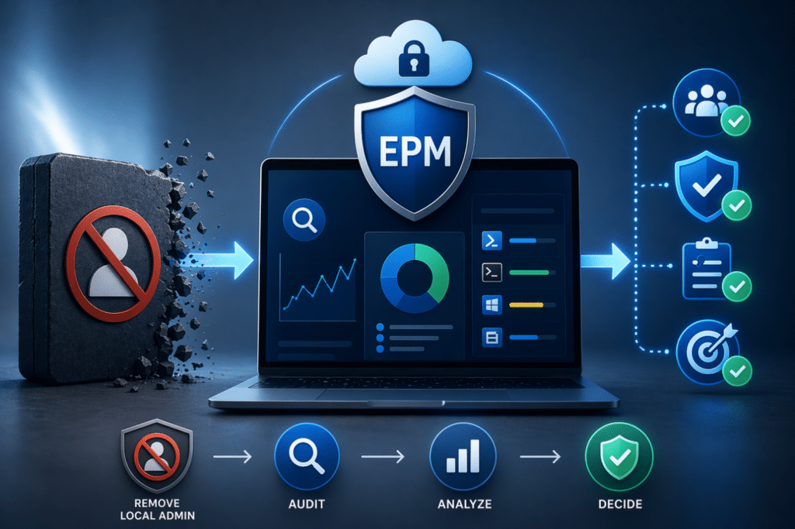
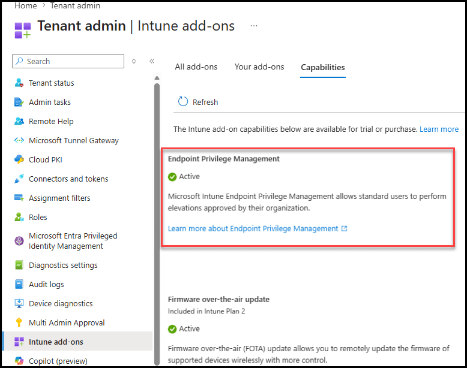
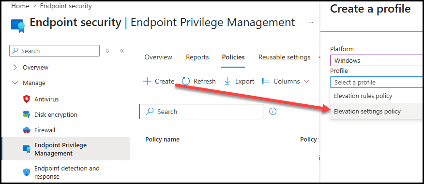
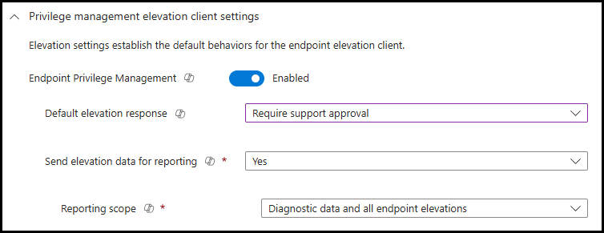
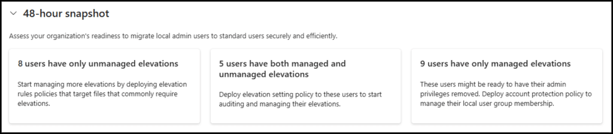
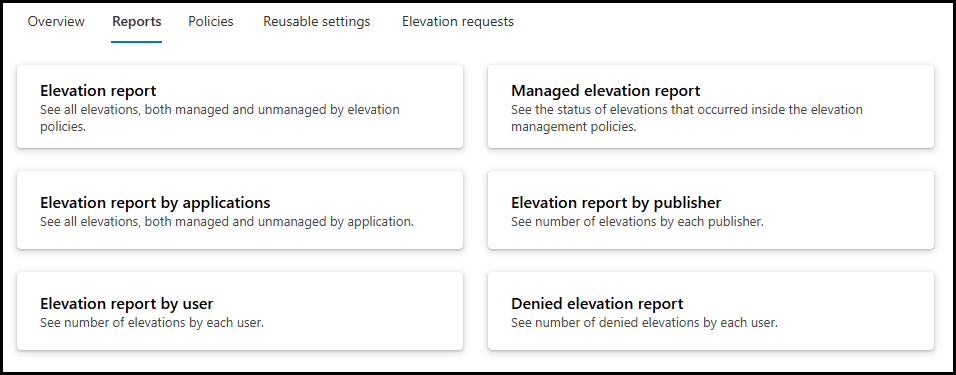
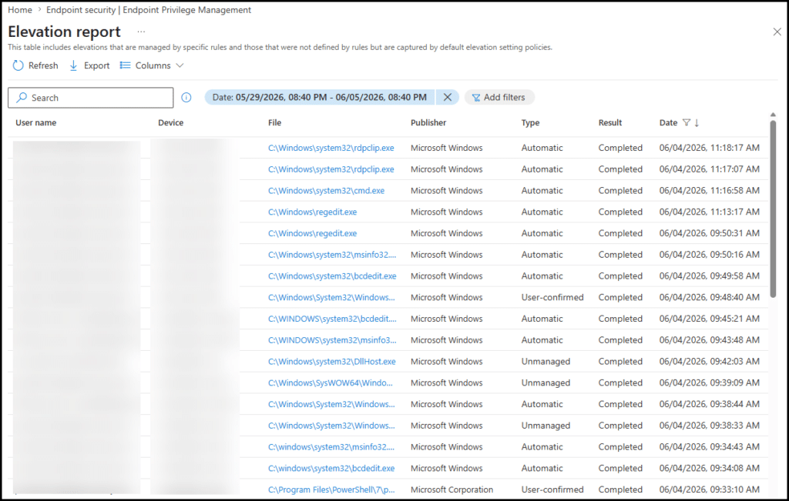

This is the second post in a series on Microsoft Intune Endpoint Privilege Management (EPM). If you haven’t read the first post, “The End of Local Admin“, we recommend starting there. It covers what Intune Endpoint Privilege Management is, why it matters architecturally, and how the elevation model works under the hood. This post picks up where that one left off.
The mistake most deployments make
In the first post, we made a recommendation: don’t start by removing local admin rights. Start by listening.
It sounds obvious. In practice, it’s the step most organizations skip.
The typical deployment pattern goes like this: IT reads the documentation, builds a few elevation rules for the applications they think users need, deploys the policy, and removes local admin rights. Then the helpdesk lights up. Users are blocked on things IT didn’t anticipate. Exceptions start getting granted. The rollout stalls, confidence drops, and Intune Endpoint Privilege Management gets labeled as “too disruptive to deploy at scale.”
None of that is a product problem. It is a sequencing problem. The elevation rules were built on assumptions rather than data, and assumptions about what users elevate are almost always wrong.
The good news is that Intune Endpoint Privilege Management has a built-in mechanism for exactly this problem – audit mode. Used properly, it tells you everything you need to know about what is actually being elevated in your environment before you change a single thing for end users.
This post walks you through how to set up audit mode, what to look for, and how to turn the data into a deployment plan.

What audit mode actually is
When people say “audit mode” in the context of Intune Endpoint Privilege Management, they mean deploying the EPM client to collect elevation data without enforcing any rules or changing the user experience.
Technically, this means:
- The EPM agent is deployed to devices via an Elevation Settings Policy
- Reporting is enabled and scoped to collect elevation activity, both managed elevations through EPM and unmanaged elevations that occur outside it.
- The default elevation behaviour is set so that nothing legitimate is blocked during discovery
- No Elevation Rules Policy is deployed yet – you are observing, not controlling
Users continue to work much as before, and behind the scenes elevation activity is being logged and sent to the Intune admin center, where you can start building a picture of what your environment looks like.
Important: EPM is not a complete discovery solution for existing local admins
Pair EPM reporting with Microsoft Defender for Endpoint Advanced Hunting.
This is your baseline.
Step 1: Prerequisites
Before you deploy anything, confirm the following:
Licensing Intune Endpoint Privilege Management requires either the Microsoft Intune Suite or, as of July 1st, 2026, Microsoft 365 E5. Verify your license status in the Intune admin center under Tenant administration > Intune add-ons. You should see Endpoint Privilege Management listed and active. If you are on Microsoft 365 E5 and the capability has not yet appeared in your tenant, check Microsoft 365 Message Center – rollout completes by August 1st, 2026, and tenants receive 30 days’ notice before activation.

Supported devices: Intune Endpoint Privilege Management supports Windows 11 devices enrolled in Microsoft Intune. The device must be managed, co-managed, or Intune-only.
Device scope: For the audit phase, target a representative cross-section of your device estate – not just a small pilot group. The value of audit mode is in seeing what real users across different roles actually elevate. If you target only 20 devices, your data will not reflect the long tail of applications that emerges when you scale. A good starting point is a stratified sample across your key user personas: office workers, operations, finance, IT, and any power-user groups you already know about.
Step 2: Create the Elevation Settings Policy
The Elevation Settings Policy is the foundation of every Intune Endpoint Privilege Management deployment. It controls whether EPM is enabled on a device, how the agent behaves by default, and what data gets reported back to Intune.
Navigate to the Intune admin center: Endpoint security > Endpoint Privilege Management > Policies > Create policy
Select Windows as the platform and Elevation settings policy as the profile type.

Before you name and configure the policy, there is one fact about how EPM treats existing local administrators that should shape the whole audit phase, and it is easy to get wrong.
EPM does not manage elevations for users who already have local admin rights. This is stated directly in Microsoft’s documentation: Endpoint Privilege Management doesn’t manage elevation requests by users that have administrative permissions on a device. If an administrator launches a file with a matching elevation rule, the application launches as it normally does for the administrator and is reported as an unmanaged elevation. Frequently asked questions for Endpoint Privilege Management – Microsoft Intune | Microsoft Learn
Read that carefully, because it simplifies your design. For a user who is still a local administrator, the EPM elevation workflow and the default elevation response are bypassed, their elevations run through normal Windows behaviour and are simply reported to EPM as unmanaged. EPM is observing them, not governing them. The default elevation response only governs users who are already standard users.
That single fact means you do not need separate policies for your admin and standard-user populations during the audit phase. A single Elevation Settings Policy, deployed across your managed Windows estate, produces exactly the outcome you want:
- For users who still hold local admin rights, EPM enables the agent and reports their activity as unmanaged elevations – the default response is moot for them, so it does no harm.
- For users who are already standard users, the same policy’s default response safely governs them, and since you have not built any rules yet, you set it so nothing is inadvertently opened up.
One policy, one place to reason about, no risk of a population landing in the wrong group. Configure it as follows.
Name: Something clear like EPM Onboarding - All Managed Windows, so it is easy to identify..
Endpoint Privilege Management: Set to Enabled. This deploys the EPM agent to the targeted devices.
Default elevation response: Set to Deny all requests or Require support approval, in line with Microsoft’s recommendation. Remember this only affects users who are already standard users, for them, it ensures EPM does not inadvertently enable elevation before you have built any rules. For users who still have admin rights, this setting has no practical effect. Require support approval has a useful side benefit during audit: where it does apply, it surfaces what standard users are actually trying to do through an approval queue, which is richer signal than a flat denial.
Send elevation data for reporting: Set to Yes.
Reporting scope: Set to Diagnostic data and all endpoint elevations. This is the broadest scope and is what surfaces unmanaged elevations, including all the activity from your still-admin population in your reports. This is the heart of your audit data.

Assignments: Assign to a group containing your managed Windows devices. A single device group covering the estate (or the representative cross-section you scoped in the prerequisites) is all you need.
A realistic caveat, restated: even with all of this in place, EPM does not capture every privileged action an existing admin performs. It reports what it can observe, but a local admin operating entirely through standard Windows UAC will not generate the rule-level detail you get from managed elevations. For your still-admin population, pair EPM reporting with Microsoft Defender for Endpoint process telemetry and Advanced Hunting, which capture privileged activity regardless of whether it touched EPM. During audit, Defender is doing much of the real investigative work for admins; EPM is the supporting view that comes into its own once users become standard users.
When a second policy does make sense: Not now, but later. As you migrate cohorts off local admin rights and start applying rules, you may want different Elevation Rules policies per persona, that is a migration-staging decision covered in the next post, and it concerns rules, not these settings. Some teams also choose to split Elevation Settings policies once they are enforcing, to apply different default responses to different populations. For the audit phase, a single settings policy is simpler and equally effective.
Save and deploy. Once devices check in and receive the policy, the EPM agent is provisioned automatically. There is no end-user notification or visible change at this point.
Step 3: Let It Run – and How Long to Wait
Patience here is not optional. Elevation behavior is not evenly distributed across days or weeks. Users elevate when they have a reason to – a software update arrives, a project requires a new tool, a quarterly process kicks off that needs a specific utility.
Our recommendation: run audit mode for at least 4 weeks before drawing conclusions.
Two weeks will catch the day-to-day patterns. Four weeks will start surfacing the less frequent events – the monthly finance reconciliation tool, the quarterly reporting utility, and the vendor diagnostic that only gets run when something breaks. These low-frequency elevations are exactly the ones that cause helpdesk calls after you remove local admin rights, because they are easy to miss in a shorter audit window.
During this period, resist the urge to start building rules. Let the data accumulate. You will build better rules from four weeks of data than from two.
Step 4: Reading the EPM Overview Dashboard
Once data starts flowing – typically within 24 to 48 hours of the first devices checking in – navigate to:
Endpoint security > Endpoint Privilege Management > Overview
This is your readiness dashboard. It is designed specifically to help you assess how ready your environment is to transition users from local admin accounts to standard users. Here is what each tile tells you and how to interpret it. Due to the amount of data, this report might take some time to generate, and it will expire after 72 hours.

Users who have only unmanaged file elevations These are users whose elevations are all being reported as unmanaged none are flowing through an EPM rule. Two different situations land here, and it is worth distinguishing them. First, standard users who elevate outside EPM. Second, and this catches people out, users who still hold local admin rights, because as Microsoft’s documentation makes clear, EPM does not manage elevations for existing admins and always reports their activity as unmanaged. So a large “only unmanaged” population is expected early on; it is largely your not-yet-migrated admin base. Drill in and export the list. The applications surfacing here are your rule-building backlog, and the users are who you will migrate once rules exist.
Users who have both managed and unmanaged file elevations: These users are partially covered – some of their elevations are already going through EPM (perhaps from a rule you deployed as a test, or from using the right-click “Run with elevated access” option), but some are still going through the unmanaged path. Investigate the unmanaged elevations for this group. These are the gaps in your coverage.
Users who have only managed file elevations: These users are already operating cleanly through EPM. If they also have local admin rights, they are your best candidates for an early transition to standard users – your low-risk pilot group for Phase 5.
Step 5: Going Deeper – The Reports Tab
The Overview dashboard provides a summary. The Reports tab gives you the details you need to actually build rules.
Navigate to: Endpoint security > Endpoint Privilege Management > Reports
The reports available here include:

Elevation report: A full log of elevation events with timestamp, device name, user, file name, file path, file hash, publisher, and elevation type. This is your raw data. Export this to CSV and work through it – look for patterns by file name, publisher, and path. Applications that appear repeatedly across different users and devices are the ones that need rules. Applications that appear once, from an unusual path, from an unsigned binary, are the ones that should make you pause before you build a rule for them.
The 30-day retention window matters here. EPM report data is only retained for 30 days. This is another reason to run your audit for at least four weeks and then act – if you wait too long after data starts arriving, the early events will have aged out before you can analyze them. Export the data regularly during the audit period and keep your own records.

Step 6: Identifying Your User Personas
The elevation data will start to reveal natural groupings among your users. This is persona identification – one of the most important outputs of the audit phase, and one that most documentation skips over too quickly.
A persona in this context is a group of users with sufficiently similar elevation needs to be governed by the same set of elevation rules. You are not mapping to job titles – you are mapping to elevation behavior.
Some patterns you are likely to see:
The standard office worker: Elevates rarely, usually for software updates on personal productivity tools, occasionally for a printer driver. Low complexity, low volume. A small set of automatic elevation rules covers this persona almost completely.
The IT operations team: Elevates frequently, for a wide range of system utilities, scripts, and diagnostic tools. High complexity. This persona needs its own rule set, and is also a candidate for the developer-style segmentation discussion from Post 1 if the tools are sufficiently sensitive.
The power user: Elevates regularly for a consistent set of specialist applications – a financial modeling tool, a CAD package, an industry-specific utility. Medium complexity, but predictable. A well-built rule set reliably covers this persona.
The irregular elevator: Elevates infrequently and unpredictably – different applications each time, no clear pattern. This persona is often best served by the support-approved elevation workflow rather than trying to build rules for every possible scenario.
Document your personas before you start building rules. The persona becomes the assignment scope for your Elevation Rules Policy – different personas get different rule sets.
Step 7: Building Your Rule Backlog
By the end of the audit period, you should have:
- A ranked list of the top elevated applications across your environment
- A user list segmented by persona
- An identified pilot group
(users with only managed elevations who already have local admin rights) - A clear picture of your unmanaged elevation volume – the gap you need to close before you remove admin rights
From this, build a prioritized rule backlog. A simple structure:
| Priority | Application | Elevation type | Persona | Detection attributes available |
|---|---|---|---|---|
| 1 | [App name] | Automatic | All users | Certificate + file hash |
| 2 | [App name] | User-initiated | Power users | Certificate + product version |
| 3 | [App name] | Support-approved | IT ops | File hash only |
The priority is determined by two factors: how frequently the application is elevated (frequency from the top elevated apps report) and how many users are affected (breadth from the elevation usage report). Start with high-frequency, broad-reach applications. These give you the most coverage for the least rule-building effort.
Post 3 in this series goes deep on how to actually build these rules – choosing the right detection attributes, handling application updates, and testing before you roll out. But before you get there, your rule backlog from the audit phase is the input you need.
What Healthy vs. Unhealthy Looks Like
Before you close out the audit phase, it is worth knowing what the data is telling you beyond just the rule backlog. A few patterns worth watching for:
High unmanaged elevation volume from a small number of users: If a handful of users account for a disproportionate share of unmanaged elevations, investigate why. Are they using local admin rights for tasks that should be going through IT? Are they running unsigned or unusual binaries? This can surface shadow IT or security risks that exist independently of EPM.
Elevations from unusual paths: Legitimate applications installed to known locations – C:\Program Files, C:\Program Files (x86). Elevations from %TEMP%, %APPDATA%, or user-writable paths are a red flag. These may represent legitimate portable tools, but they are also the signature of malware attempting to run with elevated rights. Flag these for security review before you consider building a rule for them.
Unsigned binary elevations: The elevation usage report includes publisher information. Elevations with an empty or unknown publisher field warrant scrutiny. Most legitimate enterprise software is signed. An unsigned binary being elevated regularly is either a legacy internal tool that needs attention or something you do not want to be elevating at all.
Very high total elevation volume: If your environment shows thousands of elevation events per week across a modest number of users, that is worth investigating before you move to enforcement. It may indicate that local admin rights are being used habitually for things that do not actually require elevation, or that some users are relying on elevation as a workaround for misconfigured application permissions. Understanding the root cause matters – some of these may resolve themselves once users no longer have admin rights, others will surface as helpdesk calls if you don’t build rules for them.
Closing the Audit Phase
The audit phase is complete when you can answer these questions with confidence:
- What are the top 15 applications being elevated across my environment?
- Which users have only unmanaged elevations – and what are they elevating?
- What are my user personas, and what does each one need?
- Who is my pilot group for the first standard-user transition?
- Are there any elevation patterns in my data that represent a security concern?
If you can answer all five, you are ready to move to Part 3 – building your elevation rules. That is the subject of the next post in this series.
If you cannot answer them yet, the audit period is not over. Give it more time, or extend the reporting scope to capture more of your device estate.
The temptation to skip ahead is real, especially if leadership is pushing for visible progress. Resist it. The audit phase is the work that makes the rest of the deployment succeed. Every hour you spend here saves days of firefighting later.
FAQ
Why shouldn’t I remove local admin rights before enabling EPM?
Because you don’t yet know what users actually elevate.
Removing admin rights too early leads to user disruption, helpdesk overload, and failed rollouts driven by incorrect assumptions.
What is audit mode in Intune Endpoint Privilege Management?
Audit mode means deploying the EPM agent to collect elevation data without enforcing rules or changing user behavior.
Users continue working as normal while all elevation activity is logged.
Does EPM audit mode impact end users?
No – when configured correctly:
– Users with admin rights can still elevate
– Standard users remain blocked
The goal is visibility without disruption.
How long should I run EPM audit mode?
At least 4 weeks.
Shorter periods miss low-frequency but critical events (e.g., finance tools, vendor diagnostics) that will otherwise cause issues later.
What should I look for in the EPM Overview dashboard?
Focus on:
– Users with only unmanaged elevations → highest risk when removing admin rights
– Users already using managed elevations → best pilot candidates
This helps prioritize your rollout strategy.
What data should I use to build EPM elevation rules?
Use the Elevation report to identify:
– Frequently used applications (high priority)
– Broad usage across users (high impact)
– Suspicious or rare events (review before allowing)
What are EPM “user personas” and why do they matter?
Personas group users based on elevation behavior rather than job titles.
Policies should be built per persona (e.g., standard users, IT ops, power users) to reduce complexity and improve accuracy.
What are the signs of unhealthy elevation patterns?
Watch for:
– High elevation volume from a few users
– Elevations from user-writable paths (%APPDATA%, %TEMP%)
– Unsigned binaries being elevated
These may indicate security risks—not candidates for automatic rules.
When is the EPM audit phase complete?
When you can confidently answer:
– What are the top elevated applications?
– Who relies on unmanaged elevation?
– What user personas exist?
– Who should be your pilot group?
– Are there any risky patterns?
Only then should you move to rule creation.
Will EPM fail if I skip audit mode?
Yes. Not maybe – yes.
If you build rules based on assumptions instead of real data, you will miss critical applications, block users, and end up reintroducing local admin rights just to keep the business running.
Can I speed up EPM audit mode and just run it for a week?
You can, but you’ll regret it.
Short audit periods only capture daily behavior. The real problems come from low-frequency events that show up later as “why is this broken?” tickets after rollout.
Isn’t audit mode just delaying the EPM progress?
No, it is the progress.
Everything after audit mode (rules, rollout, removal of admin rights) depends entirely on the data you collect here. Skipping it doesn’t save time; it just shifts the pain to production.
Can’t I just build EPM rules for the “known apps” and move on?
This is the exact trap most deployments fall into.
You’ll cover the obvious apps and completely miss the long tail that generates most user friction and helpdesk noise.
Should I try to cover 100% of elevation scenarios with EPM rules?
No. That’s not the goal.
Trying to automate everything leads to fragile, over-engineered policies.
Use rules for predictable patterns and support-approved elevation for the rest.
Is high elevation volume a sign that I need more EPM rules?
Not necessarily.
It can also mean:
– Users are overusing admin rights
– Apps are misconfigured
– Permissions are wrong
Sometimes the right fix is not to allow elevation at all.
Can I trust all elevation data equally?
Absolutely not.
If an app is:
– Running from %APPDATA% or %TEMP%
– Unsigned
– Seen only once
You should question it before you ever consider building a rule for it.
What’s the biggest mistake you can make during EPM audit mode?
Interfering too early.
The moment you start tweaking policies, adding rules, or “cleaning things up” during an audit, you’re no longer observing reality. You’re biasing your own data.